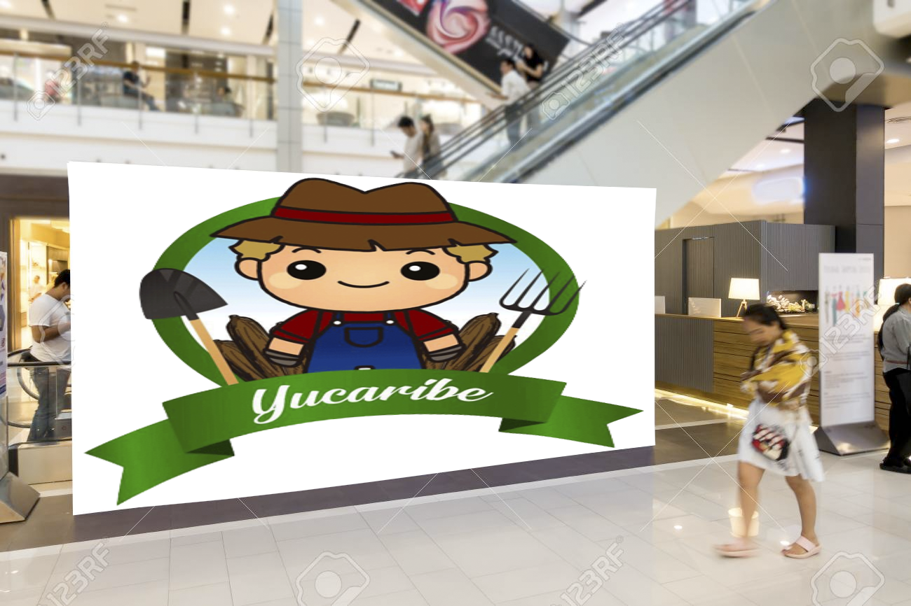
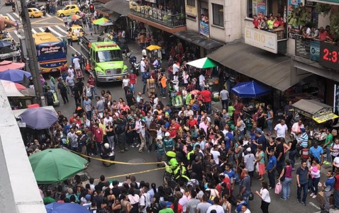
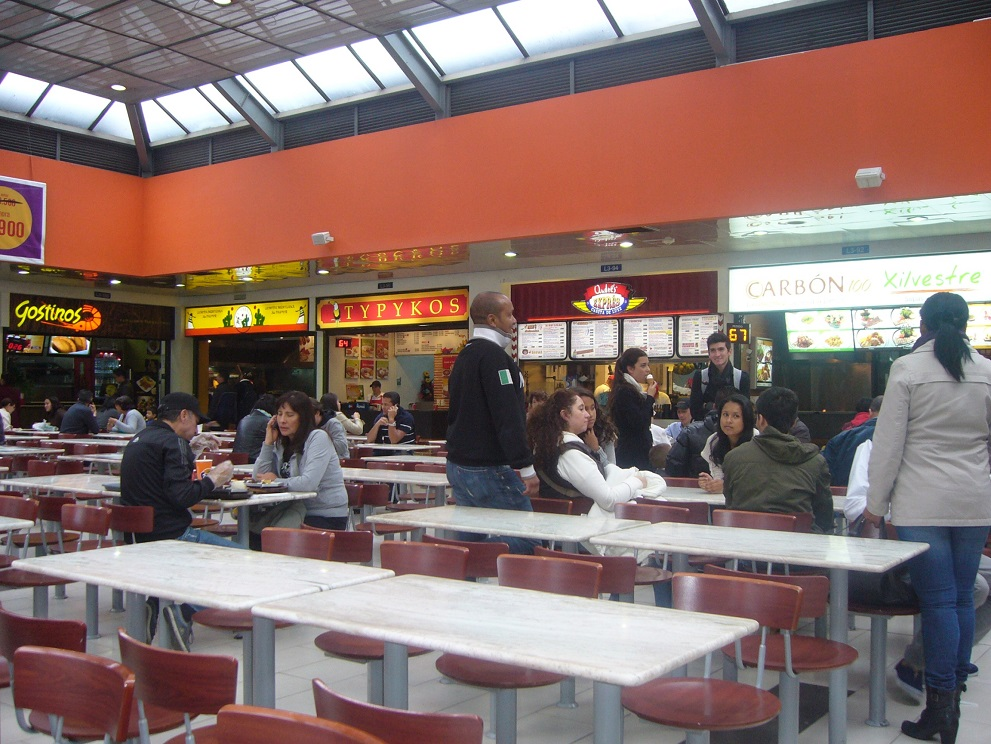

Expandiremos el negocio llevandolo a centros comerciales para que la gente vaya a comprar nuestros productos en lugares que todos conocemos, para aprovechar los panfletos que se repartieron con anterioridad en estos centros comerciales llenos de ofertas.
Los lugares con mas carteles normalmente serán las partes del centro de la ciudad, alentando a las personas a ir a las plazas de comida a buscar un delicioso pasabocas, además, el centro de la ciudad es una de las zonas mas pobladas diariamente de la ciudad sino es la mas poblada.
Estos son otros lugares donde se aprovecharían los panfletos y los carteles, ya que son lugares muy poblados también y mucha gente le gustaría probar platillos nuevos, y sobre todo los turistas que vienen a visitar y comer todo lo que puedan ¿Por que no probar los mejores platillos hecho a base de yuca?.
Nos asociaríamos con estas dos apps muy conocidas encargadas de hacer domicilios, para que le lleguen nuestros productos con mucha facilidad a todo, con ofertas y fotos que antojan en estas app para que los usuarios se animen a pedir nuestros productos desde la comodidad de su casa.